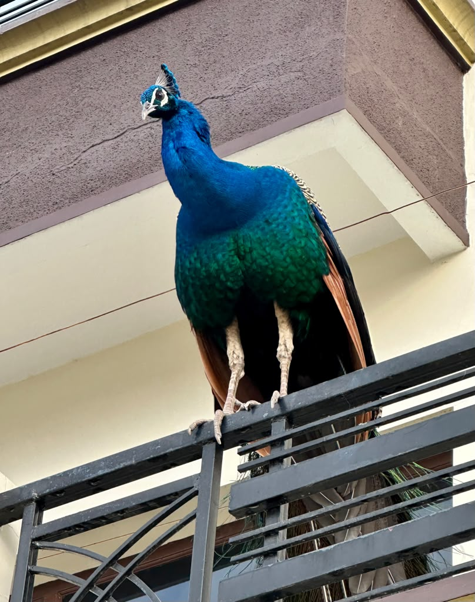
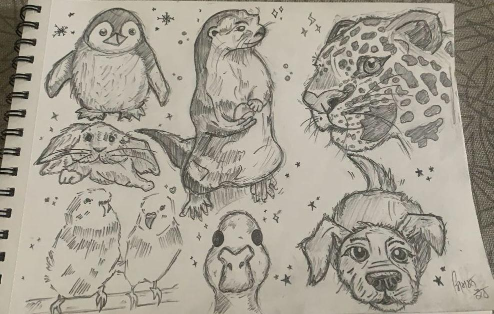
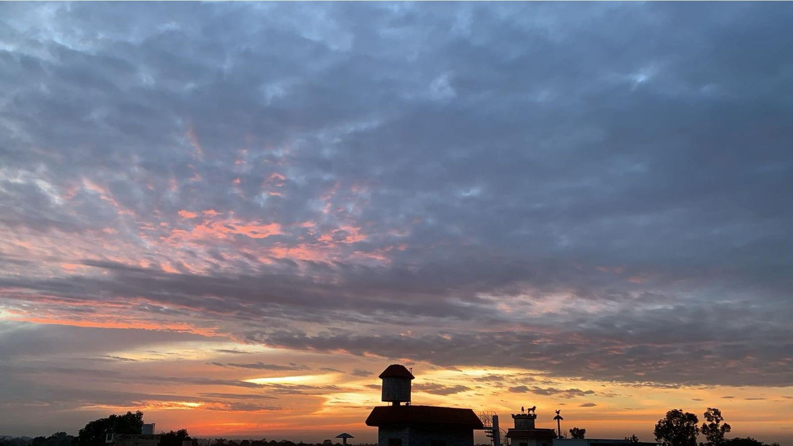

Welcome to my website! This site is where I'm putting together bits of who I am, my background, and what I'm into.
This is Enzo, my golden retriever. Most of the photos I actually have are of him, somehow.


A Few Favorites

Animals
I love animals, back home we feed birds too, they come by almost every day.
Reading
Currently reading The Hitchhiker's Guide to the Galaxy, a coworker recommended it. I hadn't read a book in a while, and this one's actually getting me back into it.

Art
I enjoy drawing different things during my free time, animals, people, whatever catches my eye. It's mostly just quick sketches and doodles now.
Music
I mostly listen to Punjabi music, Amrinder Gill, Diljit Dosanjh, and Satinder Sartaaj are some of my favorites, though they're all pretty different from each other in style.

Photography
I take a lot of random photos, mostly the sky.
Anime
Currently watching Dororo, set during a war-torn era of Japan, with a good mix of gritty, realistic elements alongside demons and the supernatural. Kind of dark anime, but the story's been good so far.
Where I'm From
I'm Originally from Punjab, India. It's a big part of who I am.